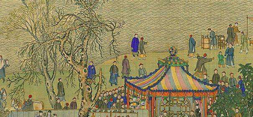
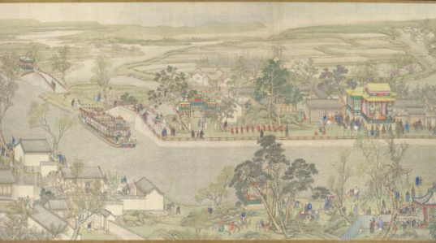
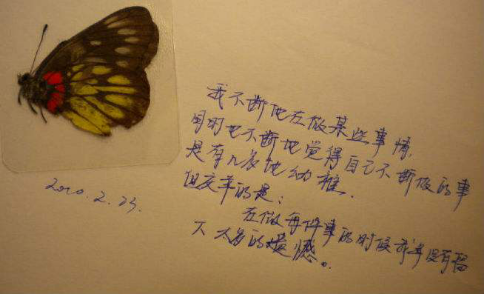
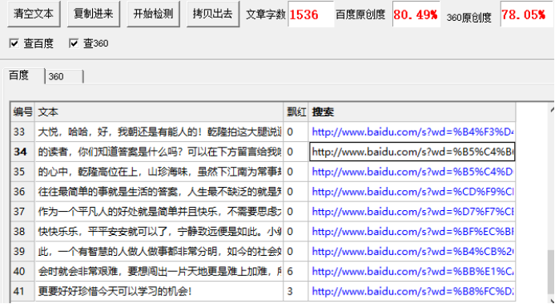

乾隆皇帝下江南，微服私访体察民情，不料却被这个问题所难住
历史记载，乾隆皇帝有三次下江南体察民情，历史上，乾隆皇帝是个非常关注百姓生活的好皇帝，他见不得百姓受苦，每每有百姓受灾，他都会吃斋念佛，为百姓祈祷。对待官员也是，虽然要求苛刻，但也会私下帮助，但绝不允许有贪官出现，否则必定严惩不贷！

乾隆二十二年(1757)年正月，乾隆帝开始第二次南巡，这次，乾隆带的人不多，因为走在街上，太多人反而不好，为了避免引人注目，他只带了两个人，乾隆走在街上，街上行人来来往往，景象不错，百姓安居乐业，街上有卖鱼的，有买年糕的还有补鞋的，等等……乾隆命人买几块年糕，说是皇后爱吃，带点给皇后。
乾隆这时被那补鞋的人吸引住了，只见那补鞋之人一边补鞋一边嘴里絮叨着，“日子难过啊！”乾隆走到他身边，“呦，瞧着这位官人不像要补鞋呀！”补鞋人说着，乾隆问他“你为何说日子难过，可是家中过得不好？你一天能赚多少钱，赚的钱可维持家中生计？家中有多少人？”说完那补鞋人摇摇头，“官人，我一天赚的钱刚刚好够吃要想再有多余的可就没有了，我一天赚的，两文钱丢下了水，两文钱借给了别人，两文钱还给了别人，还剩两文钱自己吃，你猜我们家有多少人？”
乾隆摸了摸胡子，看了看身后的两人，他们都摇头不知，可见乾隆猜不出，可又碍于身份没有请教补鞋人，乾隆为了这个问题想了许久还是不得答案。
过了没多久，乾隆一行人回到京中，一日上早朝，乾隆皇帝就把这个问题告诉文武百官，让他们来回答，乾隆说完让百官来答，许久不敢有人进言，因为说得不对可是欺君之罪啊，这得三思而行，乾隆见此景象，大怒，“难道我朝就没有能人为郑解答吗？”文武百官连忙下跪“请皇上息怒！”丞相站出来对乾隆说“皇上，臣三日之内必有答案！”这时才送了一口气，丞相有自知之明先稳住皇上，而后再去寻找答案。

丞相回到府中，左右思量，皇上今天所说问题一定是之前下江南微服私访所听到的，想来丞相是要下江南走走才行，不日，丞相也到了江南，得知乾隆之前所逛长街在哪，丞相就找到那里，在这里，丞相又看到了那补鞋人，心想，皇上应该是被此人难住了，丞相走了过去，在补鞋人跟前停了下来，仔细打量此人，心想皇上怎会被此人所为难？
且看他有什么本事，于是发问“请问你可曾记得几日前问过一个人问题，他没有回答你的？”补鞋人说“记得，记得，当然我见他一脸愁容，他还跟我说要我不能将答案告诉任何人，除非我能见他一千次，才能将答案告诉别人！”

丞相心想，皇上岂是谁都能见的，何况一个平民百姓，怕是要不到答案了，正在为难之时，丞相想到一条锦囊妙计，于是丞相拿出一千个大洋来到补鞋人的家中交给补鞋人，丞相说，“你可以告知我答案了吧，你已经见到一千次了！”补鞋人一脸懵懂“我不明白。请你明示。”丞相便告知那人是当今圣上，见到一千大洋便是见到圣上，补鞋人当场被吓得腿软，于是将答案告诉丞相。
不日，丞相回到京中，次日上早朝，乾隆问丞相可知道答案了，三日期限已到，丞相毕恭毕敬告知皇上，皇上听到答案，龙颜大悦，“哈哈，好，我朝还是有能人的！”乾隆拍着大腿说道。
对于答案，各位亲爱的读者，你们知道答案是什么吗？可以在下方留言给我哦！
所有的答案都在我们自己的心中，乾隆高位在上，山珍海味，虽然下江南为常事却也难解平命百姓的疾苦生活，往往最简单的事就是生活的答案，人生最不缺泛的就是知识，可解答却需要经验。所以作为一个平凡人的好处就是简单并且快乐，不需要思虑太多人生的道理，只要安安分分快快乐乐，平平安安就可以了，宁静致远便是如此。

小编认为，现实生活中也是如此，一个有智慧的人做人做事都非常分明，如今的社会如果不好好学习，那么当走出社会时就会非常艰难，要想闯出一片天地更是难上加难，所以，为了祖国，为了自己，就更要好好珍惜今天可以学习的机会！
